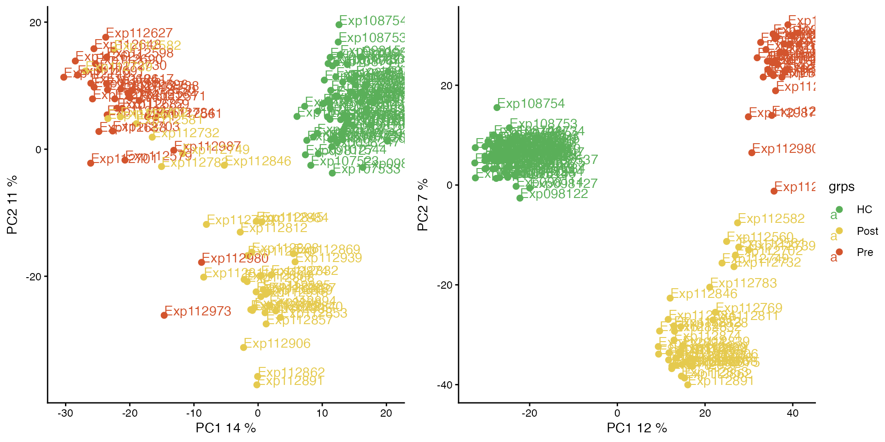
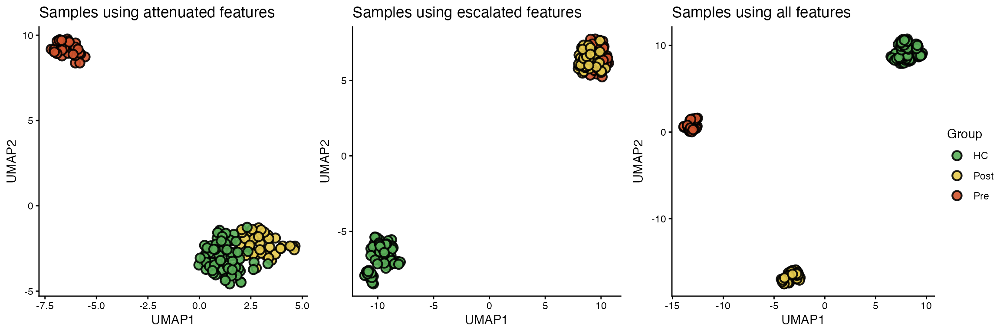
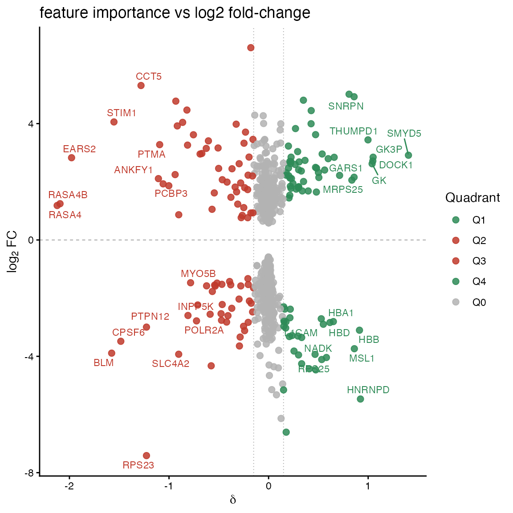
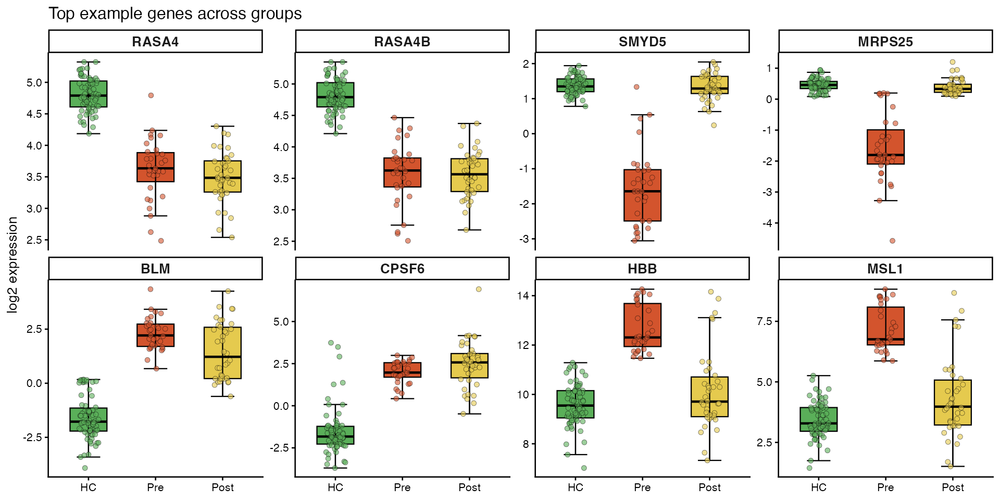
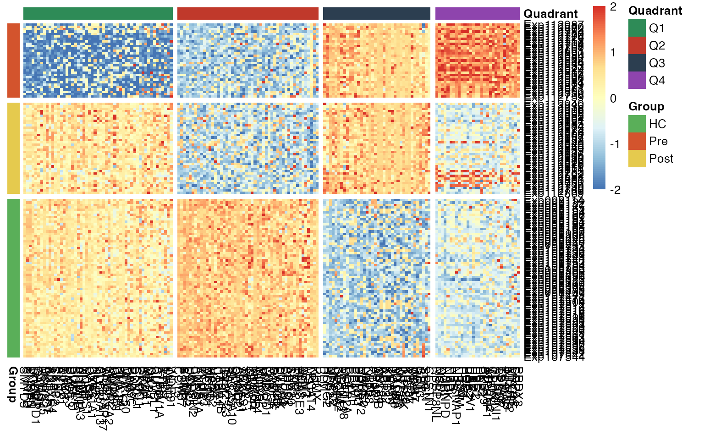
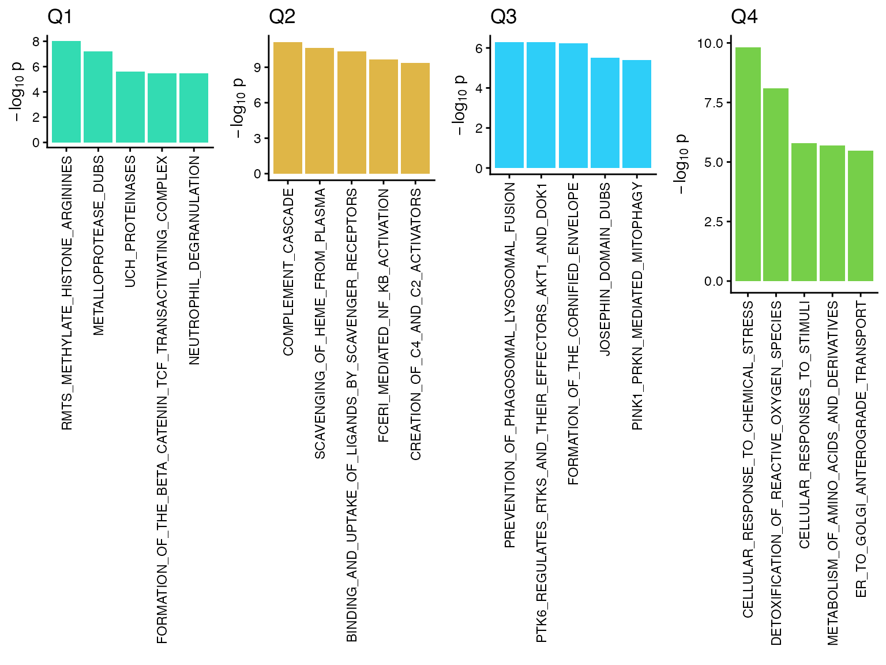

Colorectal Cancer Plasma Proteome: Label-Switch Classification Example
Di Xiao
2025-10-13
SwitchClass.RmdThis vignette demonstrates the SwitchClass workflow using a colorectal cancer (CRC) plasma proteomics dataset. It illustrates how to preprocess the data, perform label-switch classification to distinguish attenuated and escalated molecular responses, and visualize results using UMAP, quadrant plots, boxplots, and pathway enrichment.
1. Load and Prepare CRC Dataset
Load the preprocessed expression matrix and associated sample
metadata from the CRC plasma proteome study. The dataset includes
healthy control (HC), pre-treatment (Pre), and post-treatment (Post)
groups.
Apply quality filtering to retain proteins consistently detected across
samples, followed by imputation of missing values using PhosR utilities
to obtain a complete expression matrix.
data("CRC_subset")
# log2 transform
expr.log <- log2(CRC_subset$expr + 1)
rownames(expr.log) <- rownames(CRC_subset$expr)
# filtering
group <- CRC_subset$group
crc.filtered <- selectGrps(expr.log, group, percent = 0.1, n = 3)
tmp <- apply(crc.filtered, 2, as.numeric)
rownames(tmp) <- rownames(crc.filtered)
dim(tmp)## [1] 3077 135
# imputation
set.seed(123)
crc.imputed <- tImpute(scImpute(mat=tmp, percent = 0.5, grps = group), m=1.8, s=0.3)
labels <- factor(colnames(crc.imputed), levels = colnames(crc.imputed)[order(group)])
p1 <- plotQC(crc.filtered, panel = "pca", grps=group, labels = labels) +
scale_color_manual(values = c(HC = "#5AAF59", Pre = "#D3542D", Post = "#E5CA4E")) +
theme_classic() +
theme(
panel.background = element_blank(),
plot.background = element_blank(),
panel.border = element_blank(),
panel.grid = element_blank()
)
p2 <- plotQC(crc.imputed, panel = "pca", grps=group, labels = labels) +
scale_color_manual(values = c(HC = "#5AAF59", Pre = "#D3542D", Post = "#E5CA4E")) +
theme_classic() +
theme(
panel.background = element_blank(),
plot.background = element_blank(),
panel.border = element_blank(),
panel.grid = element_blank()
)
ggpubr::ggarrange(p1, p2, ncol=2, nrow=1, common.legend = TRUE, legend="right")
2. Differential Expression Analysis
Perform differential expression analysis between healthy controls and pre-treatment CRC samples using limma. Identify features showing significant fold-change and adjusted p-value thresholds.
pp <- group[group %in% c("HC","Pre")]
design_DE <- model.matrix(~ 0 + pp)
cancer.pp <- crc.imputed[,group %in% c("HC","Pre")]
fit_DE <- limma::lmFit(cancer.pp, design_DE)
cont_DE <- limma::makeContrasts(pre_vs_HC = ppPre - ppHC, levels = colnames(design_DE))
fit_DE2 <- limma::eBayes(limma::contrasts.fit(fit_DE, cont_DE))
DE.table <- limma::topTable(fit_DE2, number = Inf)
if (nrow(DE.table) == 0L) { warning(sprintf("[%s] no DE results; skip", ct)); next }
DE.table$gene <- rownames(DE.table)
DE.table <- DE.table[order(DE.table$adj.P.Val, DE.table$P.Value), ]
DE.genes <- DE.table$gene[which((DE.table[, "adj.P.Val"] < 0.05) & (abs(DE.table[,"logFC"]) > 0.5849625))]
length(DE.genes)## [1] 10713. Label-Switch Classification
Use the SwitchClass algorithm to train random forest classifiers under two label schemes—reversal (attenuated) and persistence (escalated), to compute feature-level delta scores.
# Use DE genes to focus the classification
X_bc <- crc.imputed[DE.genes, , drop = FALSE]
# Label schemes: reversal vs persistence
y_rev <- paste0("c", ifelse(group=="HC",1, ifelse(group=="Pre",2,1)))
y_per <- paste0("c", ifelse(group=="HC",1, ifelse(group=="Pre",2,2)))
# run SwitchClass
res <- SwitchClass::label_switch_classify(
X_bc, y_reverse = y_rev, y_persist = y_per
)
delta <- res$delta4. UMAP Visualization of Feature Subsets
Visualize sample clustering based on UMAP embeddings computed using attenuated, escalated, or all features. Consistent color mapping highlights group separation.
res_trip <- umap_triptych_by_delta(
X = X_bc,
delta = delta,
groups = group,
top_n = 100,
palette = c(HC = "#5AAF59", Pre = "#D3542D", Post = "#E5CA4E")
)
# View the combined plot
res_trip$plot
5. Quadrant Assignment and Delta–Fold-Change Scatter Plot
Combine𝛿scores with log fold-changes to assign each feature to one of four quadrants, reflecting distinct molecular response behaviors. Plot the scatter to reveal major feature trends.
Hm <- rowMeans2(as.matrix(X_bc[, group == "HC", drop = FALSE]))
Dm <- rowMeans2(as.matrix(X_bc[, group == "Pre", drop = FALSE]))
lfc <- Hm - Dm
out <- plot_delta_vs_fc(delta, lfc, delta_thresh = 0.15, label_top = 8)
df_quad <- out$data # tidy table with quadrants
out$plot # the scatter plot
6. Expression Patterns of Representative Features
Generate boxplots for selected representative features from each quadrant to illustrate characteristic expression changes across groups.
genes_order <- c("RASA4","RASA4B","SMYD5","MRPS25","BLM","CPSF6","HBB","MSL1")
palette_crc <- c(HC = "#5AAF59", Pre = "#D3542D", Post = "#E5CA4E")
group <- factor(group, levels = c("HC","Pre", "Post"))
p <- plot_feature_boxplots(
X = X_bc,
group = group,
features = genes_order,
feature_order = genes_order,
palette = palette_crc,
ncol = 4,
title = "Top example genes across groups"
)
p ## 7. Heatmap of Quadrant-Defined Features Create a heatmap showing standardized expression of genes across samples, grouped by both quadrants and sample type (HC, Pre, Post).
plot_heatmap_quadrants(
X = crc.imputed,
group = group,
df_quad = df_quad,
cutoff = 0.15,
palette_group = c(HC = "#5AAF59", Pre = "#D3542D", Post = "#E5CA4E")
)
8. Pathway Enrichment Analysis (Reactome)
Analysis (Reactome) Perform over-representation analysis using Reactome gene sets from msigdbr to identify biological pathways enriched within each quadrant. Visualize the top pathways per quadrant as -log10(p-value) barplots.
out <- enrich_reactome_quadrants(
df = df_quad,
universe = rownames(discovery.cohort),
top_terms = 5
)
out$plot # the combined 4-panel barplot
# out$results$Q1 # raw over-representation table for Q1
# out$barplot_df # tidy plotted values